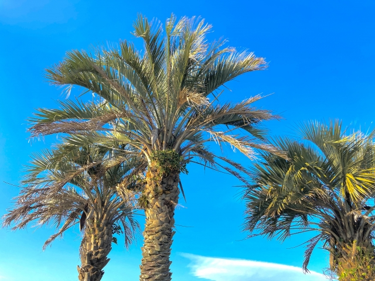

宮崎には民局が少ない！

宮崎には地上波チャンネルが少ない!なので、 たいていケーブルテレビなど他に加入します(笑)
これはヤシの木じゃなくてフェニックス!
実はこれはヤシの木ではなくフェニックスと呼ばれています！宮崎の県木です！
宮崎は全国でも上位に入るくらい、降水量が多い！
古事記や日本書紀登場する神話の舞台が多く、ニニギノミコトが降り立ったとされる高千穂峰や 西都市の古墳群、高千穂神社、鵜戸神宮など神話に関連する神社が多い！
代表的なのはチキン南蛮、地鶏の炭火焼き、宮崎牛、マンゴー！ 宮崎に寄ったら一度食べてみてください！
宮崎の観光名所は滝がすごい高千穂峡、島全体が神社の青島神社、 トレッキングや温泉が楽しめるえびの高原などいろいろな場所があります！
宮崎には地上波チャンネルが少ない!なので、 たいていケーブルテレビなど他に加入します(笑)
実はこれはヤシの木ではなくフェニックスと呼ばれています！宮崎の県木です！